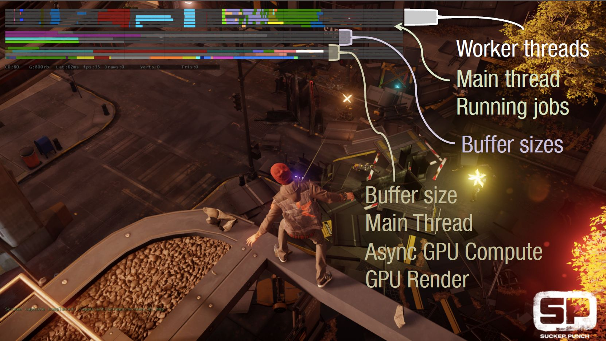
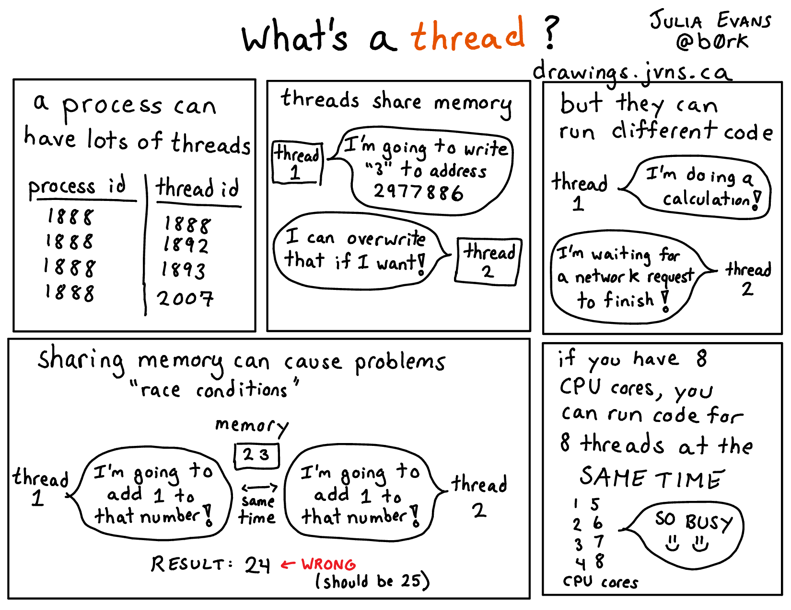

Universidad Nacional Experimental Del Táchira
Decanato De Docencia
Dpto. Ingeniería en Informática
Hilos de ejecución
Código 0435607T
Contenido
- Concepto.
- Uso de hilos.
- Modelo de hilos.
- Bibliotecas o Librerías.
- Anexos
Hebras o Hilos de ejecución
- Son pequeños procesos ejecutados dentro de un mismo espacio de direcciones, con un padre común.
- Es diferente un proceso hijo (se ejecuta en espacio de direcciones separadas) a un hilo (se ejecuta en el mismo espacio de direcciones)
Hebras o Hilos de ejecución
- Posee un contador de programa, un conjunto de registros y una pila.
- Es creada por un proceso y comparte la sección de código, sección de datos y recursos del sistema operativo.
- Una tarea (proceso pesado) posee una o muchas hebras. (procesos ligeros)
Monohilo y multihilo
Proceso monohilo
Una sola secuencia de ejecución usa todo el contexto del proceso.
Proceso multihilo
Varias hebras comparten memoria y recursos, pero conservan su estado de ejecución.
Nota: En ambos casos el proceso ocupa memoria física para su código, datos y recursos; la diferencia es que en el modelo multihilo varias hebras comparten ese espacio, mientras cada una mantiene su propia pila, registros y contador de programa.
Uso de hilos
- No producen un aumento de rendimiento.
- Muy eficientes cuando hay muchos cálculos y operaciones de E/S.
- Útiles en equipos con varios CPU. Se aprovecha realmente el procesamiento en paralelo.
- Un ejemplo: procesador de texto, servidor web, servidor de base de datos
Ventajas de utilizar
hebras sobre procesos
- Permite la ejecución de un programa aunque parte de él esté bloqueado. (generalmente por acceso a dispositivos de E/S)
- Son más rápidas de crear, hasta 10 veces más que un proceso.
- Es más económico realizar el cambio de contexto.
- Más rápido de eliminar pues solo es necesario vaciar su pila y registros, en un proceso toca eliminar todo el PCB.
Ventajas de utilizar
hebras sobre procesos
- Permite mayor control de la comunicación permitiendo crear rutinas propias, pues en el caso de procesos, es necesario usar rutinas del sistema operativo para la comunicación.
- Permite incrementar el grado de concurrencia al aprovechar el hardware con multiprocesadores.
Ejemplo de uso de Hilos
El programa utiliza hilos para:
- Inteligencia artificial de los enemigos
- Luces y sombras
- Física del ambiente: gravedad, polvo, deformaciones.
- Efectos de sonido
- Trayectoria de proyectiles.
- Y otros mas...
{kind=link}

Ejemplo de hilos/hebras en un juego
Modelo de hebras
Modelo de usuario
Gestión rápida en espacio de usuario, pero una llamada bloqueante puede detener todas las hebras del proceso.
Modelo de kernel
Cada hebra es visible al sistema operativo; mejora la planificación y el paralelismo, con mayor costo de gestión.
Modelo híbrido
Combina flexibilidad en usuario con soporte del kernel, asignando varias hebras de usuario sobre un conjunto menor de hebras del kernel.
Idea clave: la diferencia entre modelos está en cómo se mapean las hebras visibles para la aplicación con las entidades que el sistema operativo realmente planifica.
Modelo de hebras
- Al compartir espacio de direcciones, un hilo puede modificar los datos de otro hilo. No existe protección entre ellos.
- Los hilos son tratados como procesos desde el punto de vista de estados dentro del procesador. Pasan por los mismos estados de un proceso: Listo, Ejecución, Bloqueado o terminado.
Modelo de hebras
- Cada hilo tiene su propia pila.
- Se debe considerar la sincronización y competencia de los recursos de un proceso. Un hilo podría bloquear a otro mientras espera un dispositivo de E/S.
Biblioteca de Hebras
- Permite al programador una API para crear y gestionar hebras.
- Una de las formas principales es ejecutar todo desde el área de usuario como si fuese una llamada normal.
- Otro es gestionado desde el sistema operativo, el código se encuentra desde el espacio del núcleo.
- Para los sistemas POSIX utiliza el API Pthreads.
- En los sistemas Windows se usa el WinAPI.
Biblioteca de Hebras
POSIX
- Estándar definido por la IEEE conocido como 1003.1c
- Define más de 60 llamadas a funciones para gestionar hilos.
- Aceptado por la mayoría de sistemas UNIX.
Biblioteca de Hebras
WinAPI
- Implementación hecha para los sistemas Windows (Microsoft).
- Define su interfaz de llamadas para la gestión de los hilos.
- Se define una estructura para el manejo de los hilos llamada Win32 Thread Information Block
Anexos
Opinión sobre Hebras
Cuando se enfrenta a un problema, alguna gente dice: "Ya sé, usaré hilos." Ahora ellos tieAhora ellnen 2 problproblememasas 2 problemas. Tony Arcieri - @bascule
Threads/Hebras/Hilos
{kind=link}

Fuente: Julia Evans